OpenGLContext can load glTF 2.0 and binary GLB
models and render them with the PBR renderer. This
document covers what the loader supports and how to load models from your own
code; to open one, see oglc-view,
the one viewer for every format this project reads.
File parsing is handled by pygltflib, a core dependency; OpenGLContext maps the parsed glTF onto its own scenegraph and PBR materials.
Reading glTF needs no extra: pygltflib is a core dependency and
the viewer command is registered by the base install. The glfw
extra is worth adding, because that is the backend the viewer asks for:
pip install "OpenGLContext[glfw]"
Then open a model -- a local file, a URL, or via the GLTF
environment variable:
oglc-view path/to/model.glb oglc-view https://example.com/model.glb GLTF=path/to/model.gltf oglc-view
Everything about the viewer itself -- what else it opens, its controls, its library of samples, capturing a frame, embedding it -- is in The viewer. What follows here is glTF-specific.
The viewer selects the core profile, the PBR renderer, the GLFW backend and
shadows for you, so you do not need to set any environment variables. A binary
.glb is self-contained, so URLs to a .glb work
directly.
A non-binary .gltf usually references external .bin
and texture files, by URI relative to the document. A URL therefore goes
through load_gltf_url() (below), which keeps hold of where the
document came from and resolves those references against it, so a remote
multi-file .gltf opens with its geometry and textures intact.
Fetching the document by itself could not: the base URL is gone by then and the
relative references have nowhere to resolve from.
External resources are fetched through the same hardened resolver the rest of the loader uses — same-origin, size-capped and disk-cached — so a document cannot pull in a reference from somewhere else.
These are OpenGLContext's default view-platform navigation keys:
- levels the horizon.p / n) cycle through the
model's baked cameras, if it has any.If the file contains no lights, the viewer adds a default sun-plus-fill rig so the model is never in the dark.
These are Khronos glTF sample models rendered by the PBR pass. Each shows a different part of the material model.
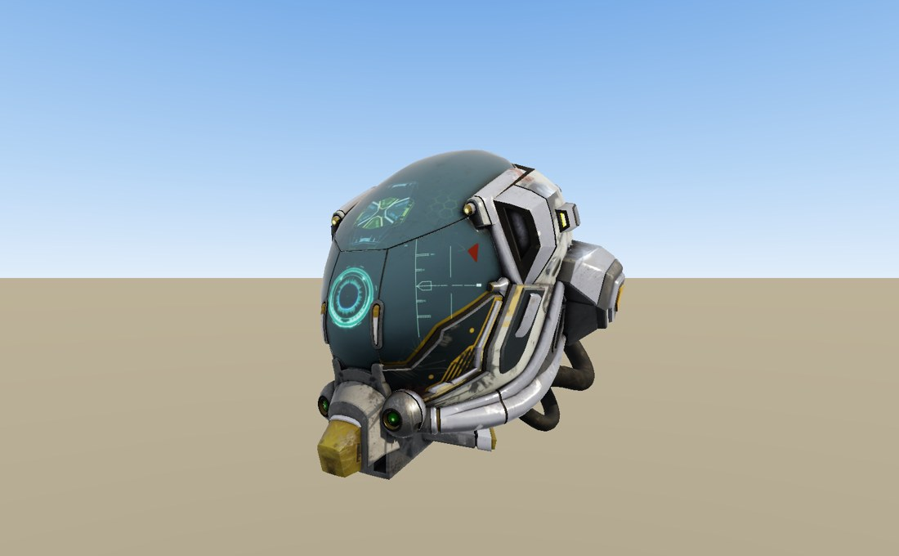
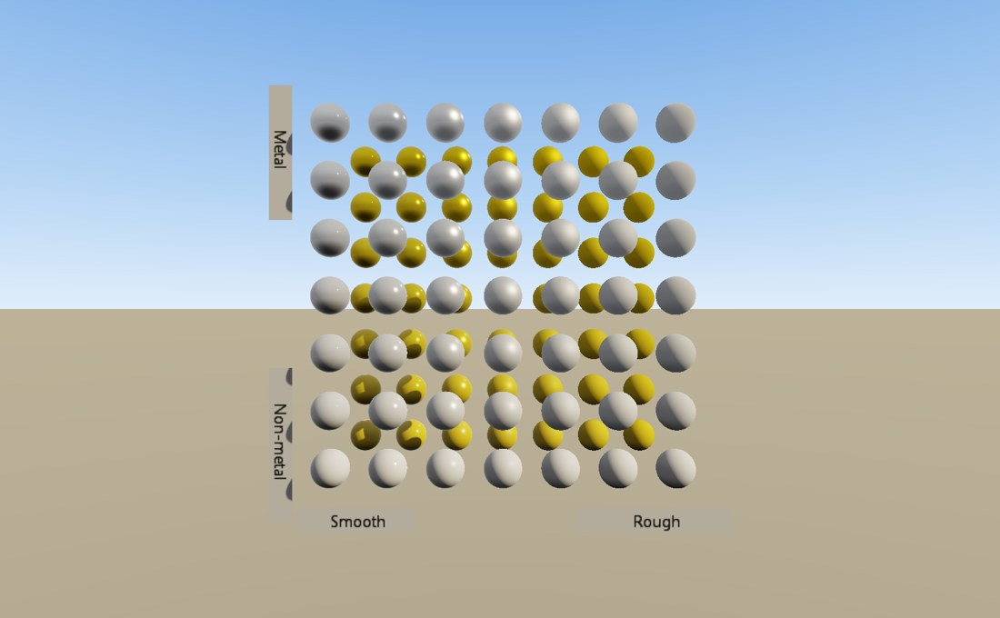
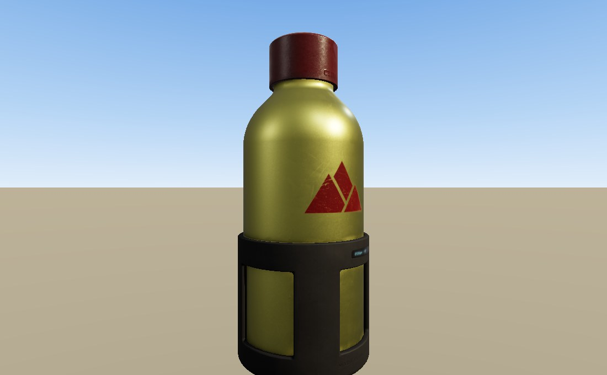
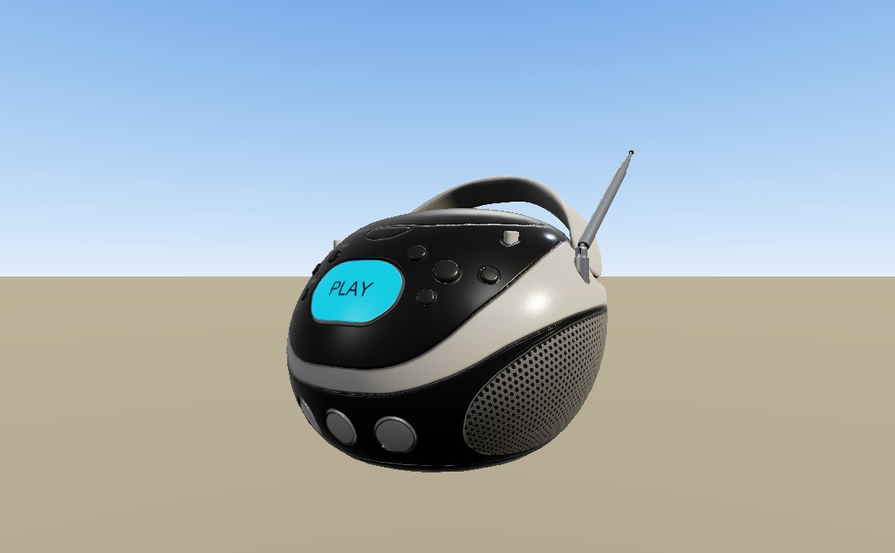
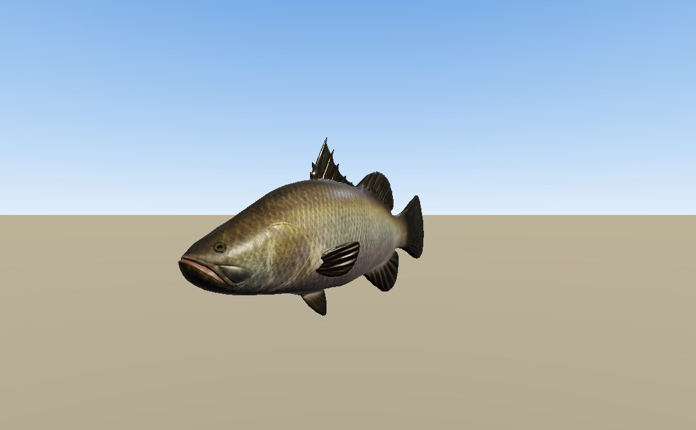
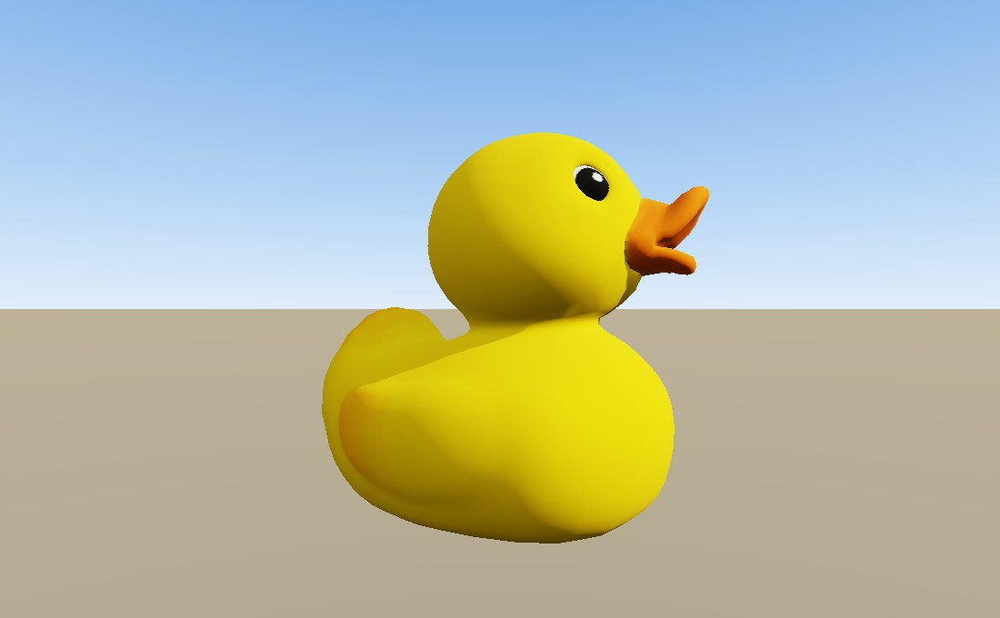
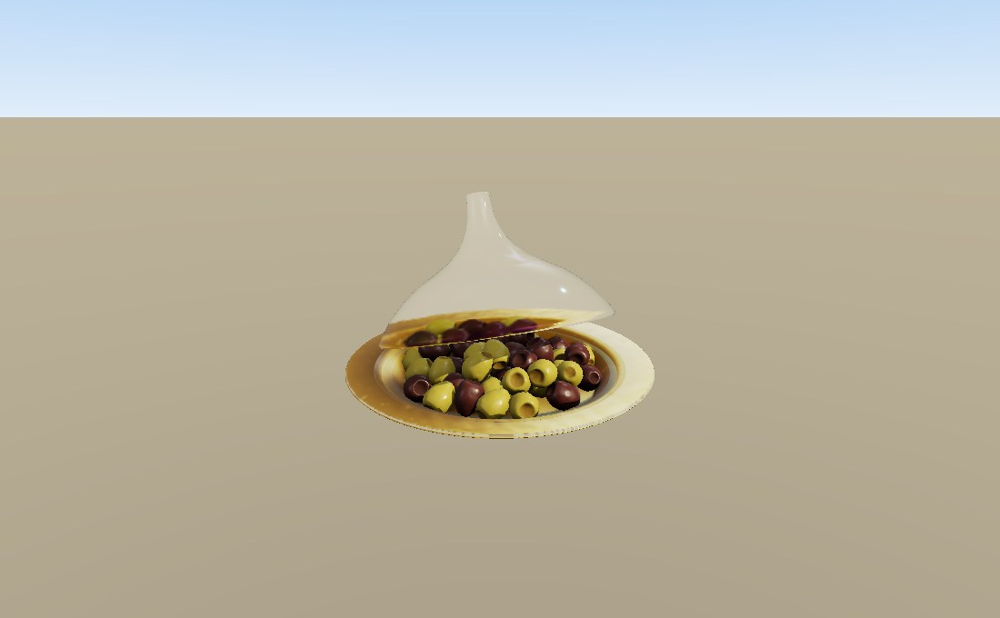
KHR_materials_transmission).The loader knows the names of the Khronos sample models and
can fetch them on demand, which is how tests/pbr_gltf_demo.py
browses the whole sample set with side-by-side reference screenshots.
The loader imports static meshes with their materials and textures:
KHR_lights_punctual directional,
point and spot lights.KHR_animation_pointer for animating material and
texture-transform properties, and KHR_node_visibility.EXT_mesh_gpu_instancing, and
repeated meshes are batched into one instanced draw whether or not the file
says so — see Instanced rendering.KHR_materials_clearcoat,
KHR_materials_sheen, KHR_materials_transmission,
KHR_materials_volume, KHR_materials_ior,
KHR_materials_specular, KHR_materials_emissive_strength,
KHR_materials_unlit, KHR_materials_iridescence,
KHR_materials_anisotropy,
KHR_materials_diffuse_transmission,
KHR_materials_dispersion, KHR_texture_transform,
EXT_texture_webp, and the legacy
KHR_materials_pbrSpecularGlossiness (converted to
metallic-roughness).KHR_draco_mesh_compression
when the optional DracoPy package is installed
(pip install DracoPy, or OpenGLContext[draco]). Without
it, a Draco-compressed primitive is skipped with a warning and the rest of the
scene still loads.glTF nodes become Transform nodes, meshes become
Shape nodes with a PBR mesh geometry and a PBR material, so a loaded
model is a normal OpenGLContext scenegraph you can inspect and modify.
The Open Metaverse
Interoperability group publishes the extensions that describe a
world rather than a model — sound, physics, sky, and the things a
player sits in or drives. Support is split across three projects: the loader
here, omi_audio and
omi_physics, both of which take the
extension as their native data model rather than converting into one of their
own.
| Extension | Status | Where |
|---|---|---|
KHR_audio_emitter | Full — audio, sources and
emitters; node and scene references; bufferView,
data: and uri audio; autoplay |
omi_audio, docs |
OMI_audio_ogg_vorbis | Full — the Ogg entry is preferred over the MP3 fallback and decoded | Codec extensions |
OMI_audio_opus | Read, preserved and reported; not decoded, so the MP3 fallback plays | Codec extensions |
OMI_physics_shape | Full, read and written | omi_physics, docs |
OMI_physics_body | Full, read and written | omi_physics |
OMI_physics_gravity | Full, read and written — global and per-node gravity volumes | omi_physics |
OMI_physics_joint | Full, read and written | omi_physics |
OMI_environment_sky |
Gradient, panorama (equirectangular and cubemap) and plain skies are drawn; the physical (atmospheric-scattering) type is read and reported but not yet rendered | The scene's sky |
OMI_seat | Future work | — |
OMI_spawn_point | Future work | — |
OMI_vehicle_body, OMI_vehicle_wheel,
OMI_vehicle_thruster,
OMI_vehicle_hover_thruster |
Future work | — |
OMI_environment_sky does not ship a sky; it describes
one, and three of its four descriptions are of a background OpenGLContext
already draws. The loader reads the document's skies[], resolves
the index the active scene names, and puts the matching node in the scene, where
the ordinary Background pass finds and binds it:
| Sky type | What it becomes |
|---|---|
gradient |
Background — the VRML97 gradient sphere. The three
colours and their curves are baked into colour stops. |
panorama, equirectangular |
HDRBackground, which also registers the panorama as the
IBL environment, so metals reflect the sky drawn
behind them. |
panorama, cubemap |
CubeBackground, six faces in the extension's
+X, -X, +Y, -Y, +Z, -Z order. |
plain | SimpleBackground. |
physical |
Nothing yet — the one type that is a renderer rather than a translation. |
A scene that brought its own sky this way keeps it: the viewer adds a backdrop
only when a document has none, so --background is still how you
override one. GLTFScene.sky is the record the scene selected,
whether or not anything could draw it, so a caller can say why a sky is
missing.
Two parts of the extension are read and kept but not yet applied. The
gradient sky's sun tint (sunAngleMax,
sunCurve) is a disc around the scene's directional light and so
varies with compass direction, which the gradient sphere's elevation-only colour
stops cannot express. The ambient contribution
(ambientLightColor, ambientSkyContribution) is not yet
wired to the ambient term. The physical sky needs a genuinely
new shader: an analytic Rayleigh/Mie scattering skydome driven by the scene's
directional sun, in glTF's inverse-metre units.
The extension projects an equirectangular panorama with the
middle of the texture at +Z and +X to its left, while
the skybox shader puts the middle at +X. The two differ by exactly
a quarter of the width, so the loader rolls the columns once, at load —
which keeps the single shared direction-to-UV mapping that stops the drawn sky
and the reflections it drives from disagreeing.
KHR_texture_basisu (KTX2 / Basis Universal) is deliberately
not read: there is no transcoder available under a licence this project can
take, and a texture in that format is skipped rather than guessed at.KHR_draco_mesh_compression needs the optional
DracoPy package; without it a Draco-compressed primitive is
skipped with a warning and the rest of the scene still loads.The loader fetches remote resources with same-origin checks and blocks link-local / metadata addresses, and caps download sizes, so pointing it at a URL is reasonably safe.
The loader returns a small scene object carrying the scenegraph group, its bounds and any cameras:
from OpenGLContext.loaders import gltf scene = gltf.load_gltf( "model.glb" ) # or gltf.load_gltf_url( url ) group = scene.group # a scenegraph Group you can add to your own scene centre = scene.center # bounding-sphere centre, for framing radius = scene.radius # bounding-sphere radius strays = scene.strays # parts the file stranded outside that sphere cameras = scene.cameras # list of baked camera poses
You can drop scene.group straight into a context's scenegraph, or
use scene.center / scene.radius to frame the model, as
the viewer does.
That sphere is fitted to the model, not to the file's whole extent: a
part the exporter stranded far outside the rest is left out of it, so that one
forgotten duplicate cannot push the camera hundreds of model-widths back.
scene.strays counts them and scene.stray_reach says how
far the farthest goes in radii of the fitted sphere; both are 0 when the model is
all in one place. The strays are still in scene.group and still
drawn — this decides where to stand, not what to render. The rule, and the
three constants that set it, are in
OpenGLContext.loaders.gltf.transforms.framing_bounds(); the viewer's
Framing a model covers it in full.
Drawing one asset many times — a cast of the same character, a forest of one tree — parse it once and build a scene per instance from that parse:
from OpenGLContext.loaders import gltf document = gltf.parse_gltf( "character.glb" ) # read + decode the file once figures = [ gltf.load_gltf( document=document ) for _ in range( 20 ) ]
Each load_gltf(document=…) is its own independent scenegraph
with its own materials and its own deformable-mesh state, so the instances animate
and recolour independently. What they share is only what none of them changes: the
JSON parse is done once, and the immutable vertex and animation-keyframe arrays are
decoded on the first build and referenced — not copied — by every later
one. A skinned mesh deforms on its own copy, so sharing never couples two bodies'
poses. A lone load_gltf( "model.glb" ) is unchanged: it decodes its own
arrays and needs no document.
A model an application drives — repaint this car, pose that dial, hide the shell for the view from inside it — is addressed by the names it was authored under, so re-exporting the art is not a change to the code. Three registries carry them:
scene = gltf.load_gltf( "car.glb" ) interior = scene.getDEF( "interior" ) # one node, by its glTF name scene.materials[ "paint" ].baseColor = (0.1, 0.3, 0.6) # one material, by its player = scene.player_named( "steer", loop=False ) # one animation clip, by its
scene.materials maps the name a document gave a material to the
PBRMaterial built for it, for the materials the scene's geometry
uses. The Shape, its mesh and this mapping all hold the one material
object, so repainting what it hands back repaints the model. glTF names need not
be unique: a repeated name maps to the first material in the document carrying
it, and a material the document left unnamed is drawn and not indexed. The
writer writes a material's DEF as its glTF
name, so a name survives a round trip.
player_named() is player() asked by name instead of
by index, and returns None where no clip carries the name.
loop=False clamps the clip at its ends, which is what
posing one wants rather than playing it — a steering wheel turned
a fraction of its travel, a lever part-way through its throw:
player = scene.player_named( "steer", loop=False ) player.evaluate( fraction * player.duration ) # 0.0 the first key, 1.0 the last
Carrying the travel in a clip rather than as an angle in code leaves the limits of the movement with the artist: the keyframes say how far the wheel turns, and the caller says only how far through that it is.
An application's art is a table of names — this vehicle is that
.glb, that pickup is this one — and everything else about
loading one is the same every time.
OpenGLContext.loaders.assets.AssetLibrary is a directory of models
addressed by relative name, so the table is a table of filenames and never a path
built at each call site:
from OpenGLContext.loaders.assets import AssetLibrary
ART = AssetLibrary( os.path.join( os.path.dirname( __file__ ), 'assets' ) )
scene = ART.shared( 'cars/saloon.glb' ) # one copy, shared by every caller
if scene is not None:
world.children.append( scene.group )
mine = ART.load( 'cars/saloon.glb' ) # my own copy, to change
mine.materials[ 'paint' ].baseColor = (0.6, 0.1, 0.1)
Ask for a shared copy to draw, and a load to change.
shared() reads the file once and hands the same subtree to every
caller, which is what a scenegraph's USE has always meant: the same
model mounted in as many places as it is wanted. load() reads the
file again and hands back a scene nobody else holds, for a caller that will
repaint or pose what it gets.
A crowd in a handful of colours wants neither. A road full of
traffic, a team in strip, a rank of soldiers: shared() cannot be
repainted without repainting all of it, and load() costs a file read
and a parse per member of the crowd, on the frame that member appears.
variant() is one copy per version — prepared once, then shared
by everything asking for that version, which is also what lets the renderer draw
the crowd as one batch:
from OpenGLContext.loaders.assets import recolour
scene = ART.variant( 'cars/saloon.glb', paint,
prepare=lambda one: recolour( one.group, paint ) )
The key names the version — the colour, the team, the season — and
prepare is called once, the first time that key is asked for. Since
the scene is then shared, a caller that changes it afterwards changes it for
every other holder, which is the same contract shared() has.
A model that will not load is not an error. Both calls return
None for a file that is missing or will not parse, and log a warning
with its traceback; shared() remembers the absence, so a missing
file is read for once rather than once a frame. What that leaves is a hand
empty or a car undrawn, and a caller with a fallback can use it — a level
that fails to start over one corrupt file has failed worse than one with an
invisible car in it.
recolour( node, colour ) paints every material in a subtree one
colour and brighten( node, glow ) lights each one in its own,
for art whose colour is the whole of what it says: a family of pickups is then
one model painted several ways rather than one file each. Both change what they
are given, so they belong to a subtree from load(). A model with
several materials that must stay apart — paint, glass, bright trim —
is repainted through scene.materials instead, which touches the one
material named and leaves the glass glass.
Everything the viewer does — loading without freezing the window, the
default light rig, auto-framing, the model's own cameras and animations, the
caption, screenshots, the library, walking — is the reusable
OpenGLContext.viewer package, not the script. An application gets
all of it by subclassing ViewerContext and saying what it wants
with a ViewerOptions. There is no command line involved
(the full account is here):
from OpenGLContext.viewer import ViewerContext, ViewerOptions
class MyViewer( ViewerContext ):
options = ViewerOptions(
source = 'model.glb', # a path or an http(s) URL
physics = True, # walk it, rather than fly around it
background = 'sky',
)
MyViewer.ContextMainLoop()
ViewerOptions is a dataclass holding every knob the viewer has,
and it is the same object the command line fills in —
argparse populates one as its namespace — so the defaults are
written once and a flag can never mean something different from the field. The
fields are grouped as: the source; the cameras
(camera, no_cameras); auto-framing (yaw,
margin, elevation, tilt,
eye, look_at); lighting and environment
(lights, shadows, ibl_intensity,
environment, background); animation
(animate, animation, anim_time,
turntable, no_rotate); physics; and the
window and frame (size, capture,
capture_delay, frames).
A viewer that shows something other than one file overrides these. This is
how oglc-gltf-demo browses a whole downloaded catalogue while
sharing every other behaviour:
| Method | What it decides |
|---|---|
prepareSource() |
Where the model comes from. A browser with no single source overrides this to do nothing. |
loadScene() |
Produce the scene. Runs on a worker thread, so it must not touch GL — that is what keeps the window drawing through a download. |
requestInitialScene() |
What to load first. |
buildScenegraph( scene ) |
Turn a loaded scene into self.sg. Called again for each new
model, which is what makes swapping models possible. |
onSceneReady() |
Just after a scene is built, on the render thread. |
drawExtraOverlay( shader ) |
Draw over the finished frame. |
buildPhysicsWorld() |
Where the collision world comes from, if not cooked from
self.sg — see
walking. |
The package is assembled from pieces that are useful on their own, so a context that is not a glTF viewer can still take the one it needs:
| Module | What it gives you |
|---|---|
viewer.options |
ViewerOptions: the configuration, shared with the CLI. |
viewer.asyncscene |
AsyncSceneMixin: load a scene off the render thread and
apply it on it. Format-neutral — it does not know what a scene is. |
viewer.framing |
fit_sphere() and look_from(): where to put a
camera to see a thing. Pure arithmetic, no GL. |
viewer.environment |
The gradient sky, and the skybox matching whatever the IBL probe loaded, so the visible backdrop and the reflections agree. |
viewer.caption |
CaptionMixin and CaptionLayer: what the viewer
says over the frame — a HUD layer like any
other, so it takes the skin and the interface scale for free. |
viewer.debug |
The viewer's own section on the developer overlay
(Alt+F): which adapter read the source, how big it turned out,
which camera is bound. One overlay, not a second one. |
viewer.overlay |
ScreenshotMixin (F2 writes a PNG). The one part that is
about the frame rather than the interface, so it is not a HUD
layer: it reads the back buffer before it is swapped away. |
viewer.capture |
SettleCaptureMixin: render one settled frame to a file and
quit, which is what --capture is. |
Walking is deliberately not in this package: it is a capability of every interactive context. See Walking any scene.
The sibling Parthenon
project builds a metre-scale glTF model of the temple and bakes a set of
cameras into it -- a walking tour from the eastern approach, up the steps,
through the pronaos door and into the naos. Loading it in
oglc-view and pressing PageDown steps through these cameras. The
shots below are one per baked camera.
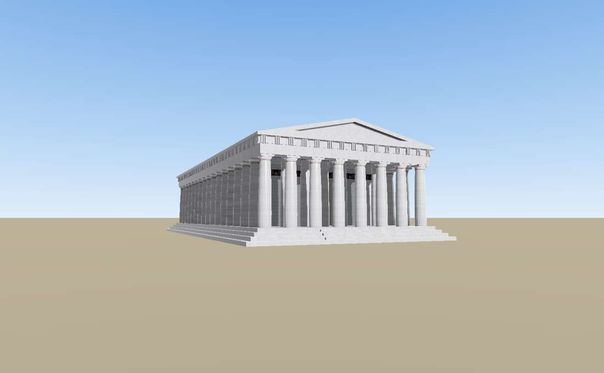
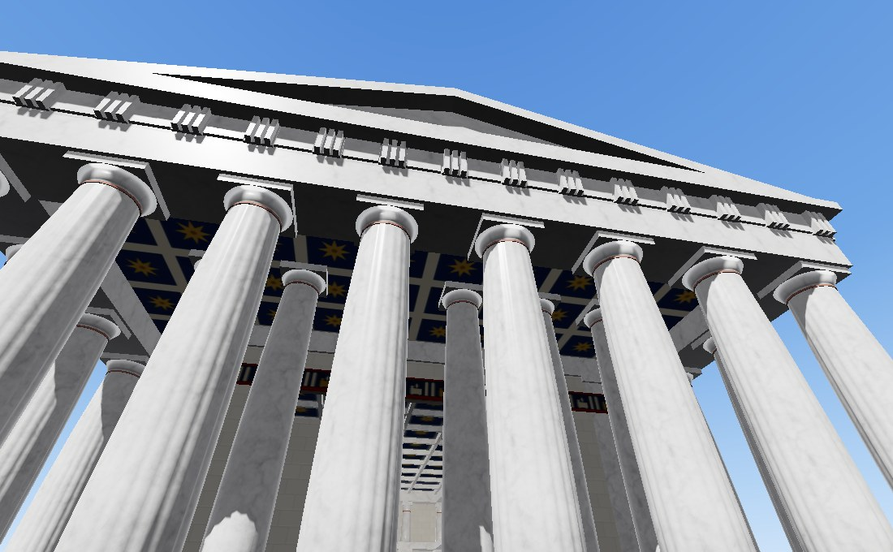
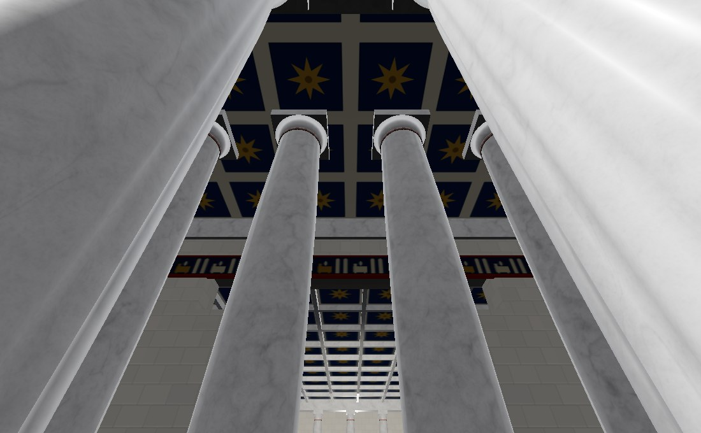
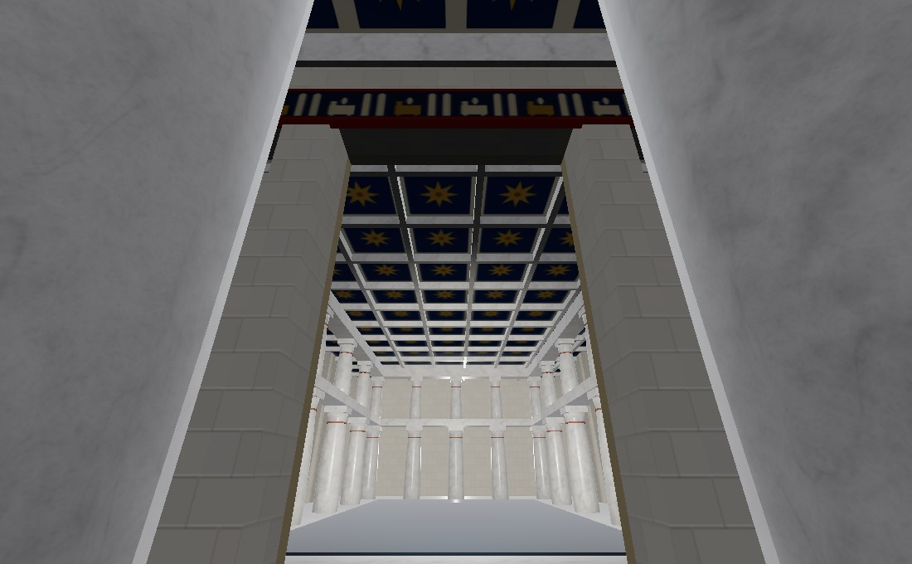
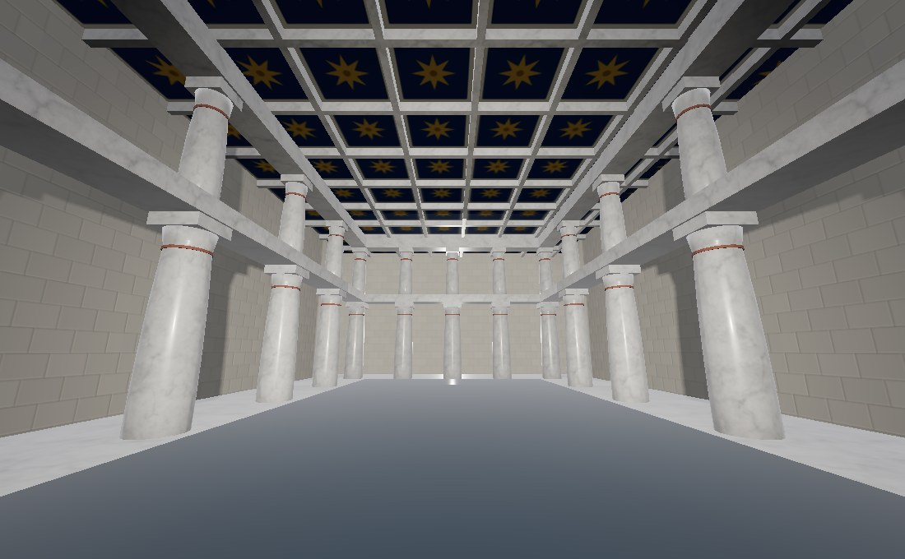
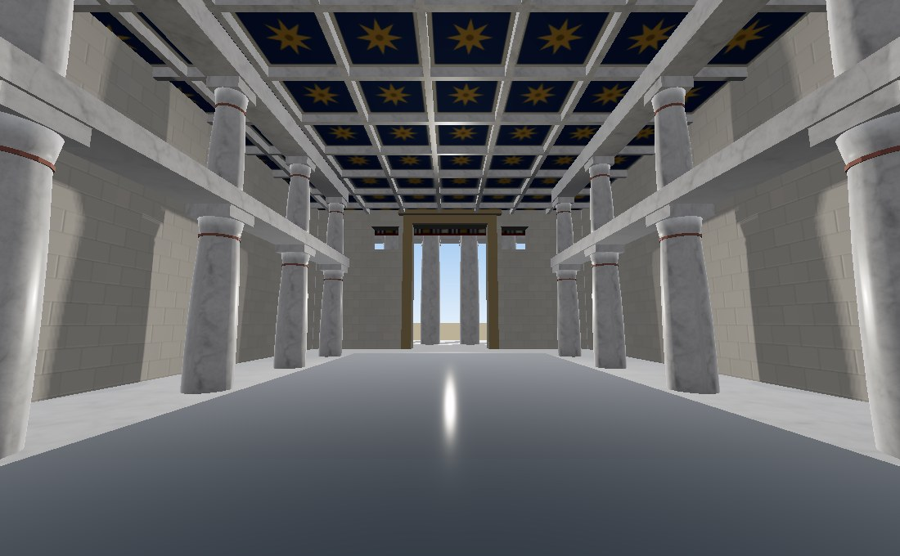
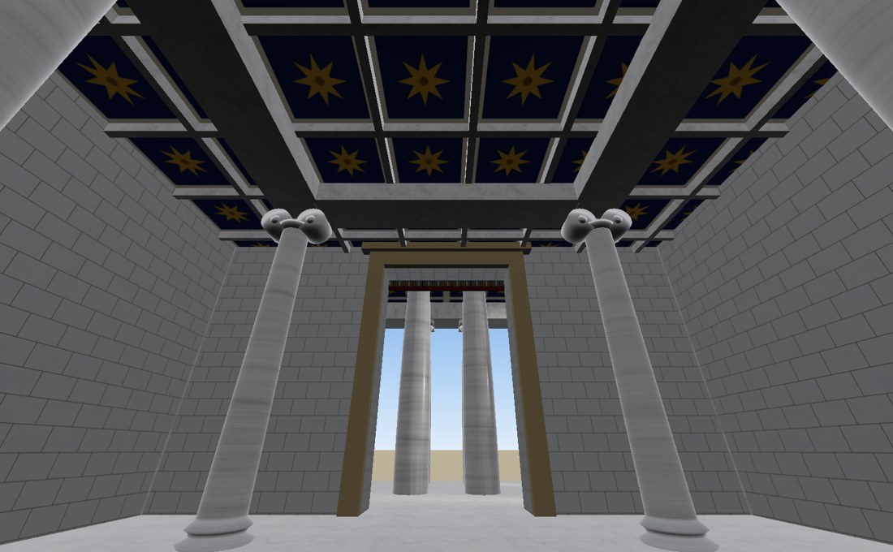
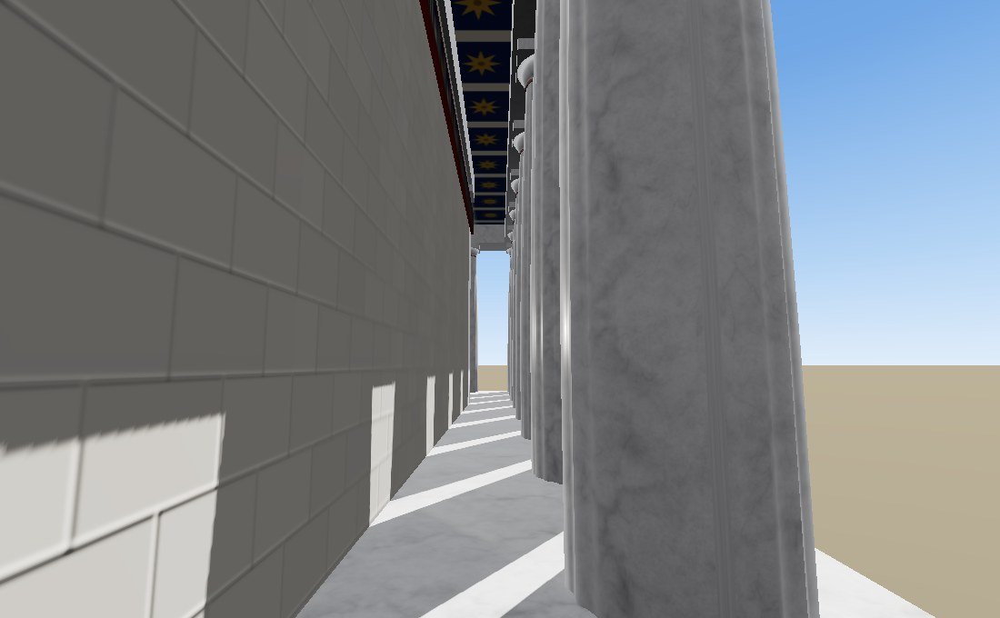
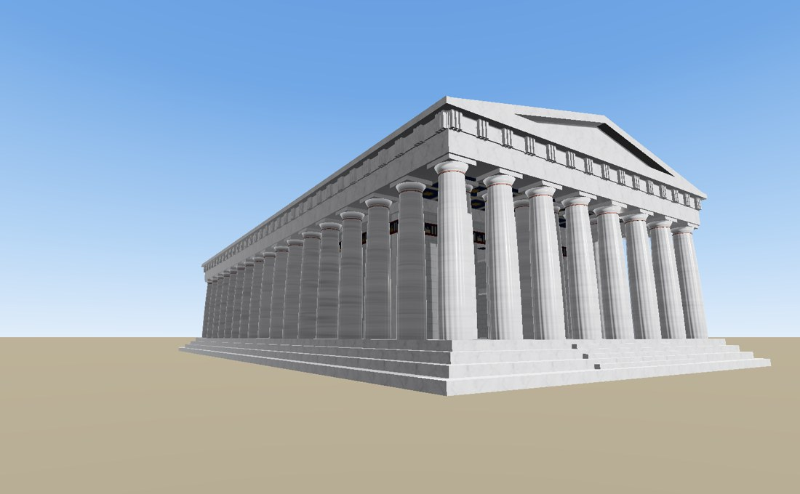
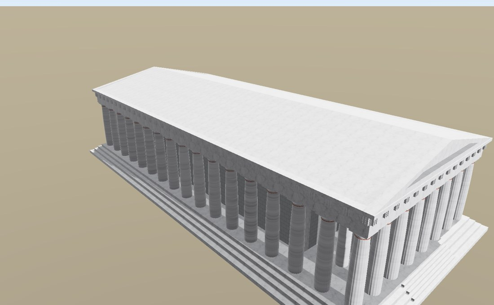
The images on this page are produced by a script in the source tree so they can be refreshed whenever the renderer changes:
python scripts/generate_doc_images.py # gallery + Parthenon python scripts/generate_doc_images.py --gltf-only
It downloads the sample models on demand, renders one shot of each with the
PBR pass, and writes the results into docs/images/. It renders each
model in its own process, so it needs a display or an offscreen GL platform
(for example PYOPENGL_PLATFORM=egl).